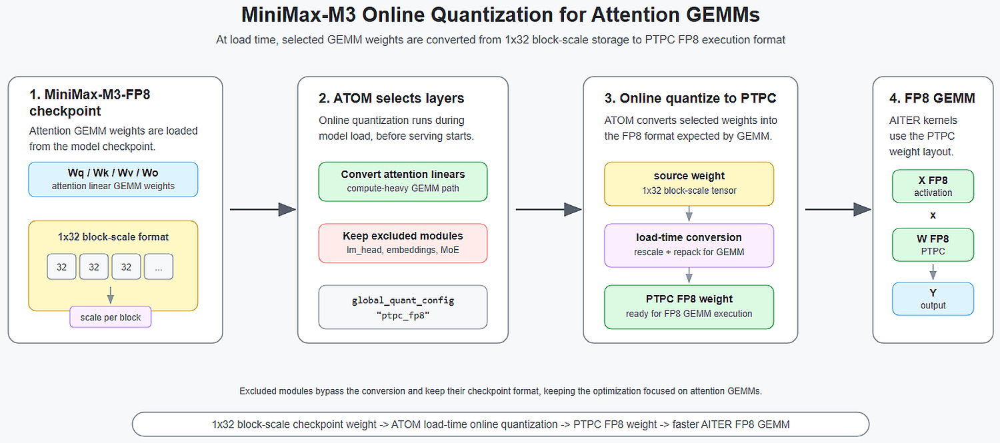
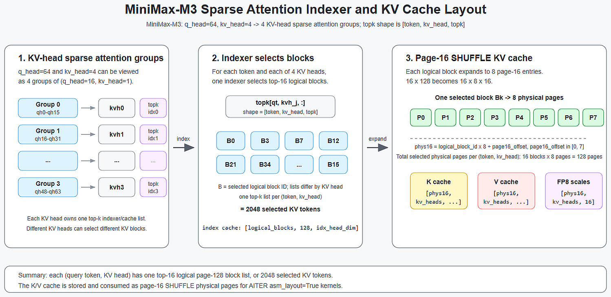
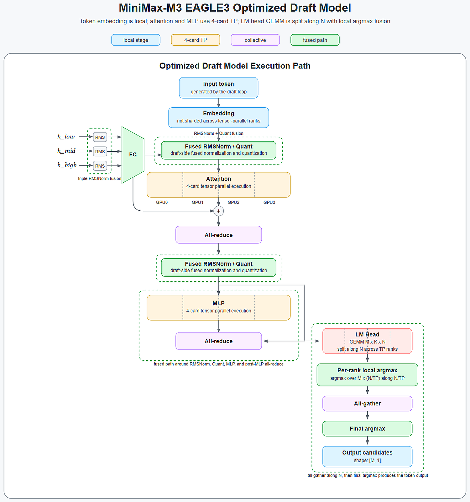
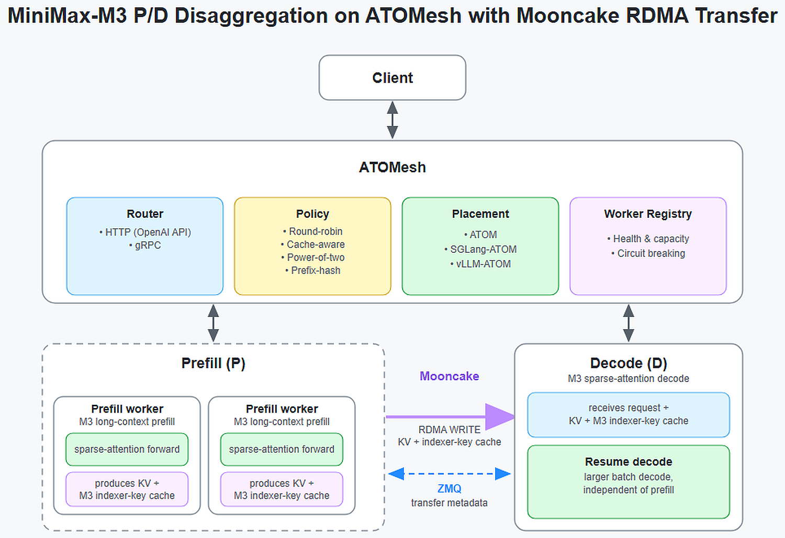
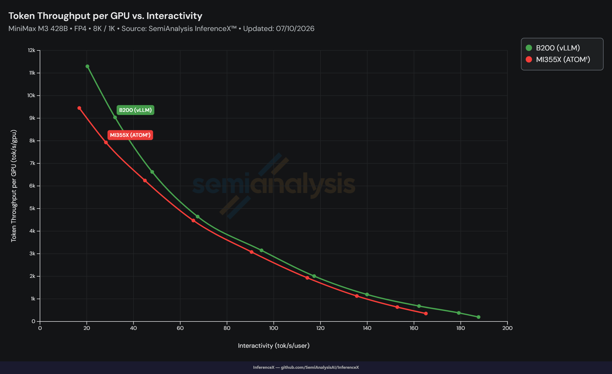

MiniMax-M3是高密度推理模型：MoE、稀疏注意力、长上下文KV缓存、量化检查点全都有。只优化一个内核远远不够，要在AMD Instinct MI355X上稳住服务效率，得通盘考虑整条推理路径。AMD ATOM团队的做法是把四大优化叠在一起。
这四件事分别咬住不同的瓶颈：在线量化让注意力GEMM更快；稀疏注意力加FP8 KV缓存压掉带宽与内存移动；EAGLE3投机解码砍下目标模型的前向次数；ATOMesh在分布式GPU上做prefill/decode分离并迁移缓存的正确性元数据。
MiniMax-M3推理路径复杂：混合专家（MoE）、稀疏注意力、长上下文KV缓存管理和量化检查点并存，牵一发而动全身。近期工作聚焦于四大领域：量化（针对注意力线性层和GEMM的在线量化）、注意力运行时（AITER稀疏注意力 + FP8 KV cache + page-16 SHUFFLE KV布局）、投机解码（EAGLE3，优化草稿与目标执行）、分离式推理（ATOMesh P/D分离 + 稀疏索引器-键缓存传输）。
这些改动共同改善服务端最痛的四个瓶颈：注意力GEMM开销、KV缓存带宽、稀疏注意力调度、以及目标模型前向频率。
ATOM提供多种在线量化方法，能在不重新生成完整模型的前提下为高效GEMM执行准备检查点权重：包括BF16→FP8/FP4量化，以及同数据类型内的格式转换（如FP8块缩放 → FP8 PTPC）。对MiniMax-M3，ATOM只在能提升GEMM吞吐的位置应用：注意力线性层和部分稠密MLP层；lm_head、嵌入层、视觉组件、多模态投影器和MoE层被排除，MoE权重保持原有量化格式。
以MiniMaxAI/MiniMax-M3-MXFP8为例：选定的注意力GEMM权重从1x32块缩放表示加载，在模型加载期转为PTPC FP8。该转换走GPU逐元素内核，只增加少量一次性的权重加载开销。

第二个方向针对注意力运行时：不是单一内核改动，而是ATOM框架与AITER算子库协同配合。MiniMax-M3有模型特定的稀疏注意力：分组查询头（GQA）与按KV头选择的块。这些细节决定了稀疏索引器、块表和page-16 KV缓存布局的表观语义。
具体地，MiniMax-M3有q_head=64、kv_head=4，可视为4个KV头稀疏注意力组（各含q_head=16、kv_head=1）。对每个查询token和KV头，索引器选16个逻辑块（每块覆盖128 token）。
实现横跨两侧：ATOM侧将注意力重构为标准Attention + PagedAttentionImpl，引入SparseMHAPagedAttentionImpl与page-16 SHUFFLE KV cache；AITER侧为fused_qknorm_idxrqknorm增加SHUFFLE布局支持，用独立K/V cache张量，经asm_layout标志选择page-16 SHUFFLE寻址路径。

MiniMax-M3增加了EAGLE3推测解码支持。目标模型注意力解码路径扩展为支持max_q_len > 1，从而做多token推测验证。草稿模型侧，token先进非分片嵌入路径，再依次执行4卡张量并行注意力、all-reduce、融合RMSNorm/Quant、4卡张量并行MLP与分布式argmax。
用 --num-speculative-tokens 3跑GSM8K验证：每次前向平均接受3.20 token，整体草稿接受率73.45%，首个/第二/第三个草稿token接受率分别为85.8%/73.7%/60.9%。该分布说明EAGLE3能在保持输出一致性的同时显著减少目标模型计算量。

ATOMesh支持prefill/decode分离，在分布式GPU资源上做大模型推理。这对MiniMax-M3尤其有用：长上下文prefill与稀疏注意力decode有不同的扩展瓶颈，将两阶段分离后，部署可为各阶段独立分配资源。
针对MiniMax-M3，ATOMesh新增专属缓存传输路径，使P/D分离同时传输标准K/V缓存与稀疏注意力层维护的稀疏索引器键缓存：确保解码worker拿到正确选择top-k历史块所需的元数据。

FP4服务模式下，搭载AMD Instinct MI355X的ATOM MiniMax-M3服务吞吐与公开发布的InferenceX测量对比如下三张图，分别覆盖纯ATOM、叠加M3 EAGLE、以及Mooncake ATOMesh三种配置。
三张图的可复现流程已沉淀：MiniMax-M3 MXFP4/MXFP8使用指南含启动命令、在线量化配置、EAGLE3设置、精度测试、基准脚本与请求形状/并发参数，按图索骥即可复现每GPU服务吞吐。


在AMD Instinct MI355X上优化MiniMax-M3，需要的是整条链路的协同而非单点突破：ATOM在线量化加速注意力GEMM；AITER稀疏注意力和FP8 KV缓存压低注意力运行时的开销与内存移动；EAGLE3推测解码降低解码期的有效目标模型工作负载；ATOMesh支持MiniMax-M3缓存传输实现P/D分离。
这些优化叠加起来，把注意力GEMM、KV缓存带宽、稀疏调度和目标前向频率四个服务瓶颈一并压下去。
参考：https://rocm.blogs.amd.com/software-tools-optimization/minimax-m3-mi355/README.html